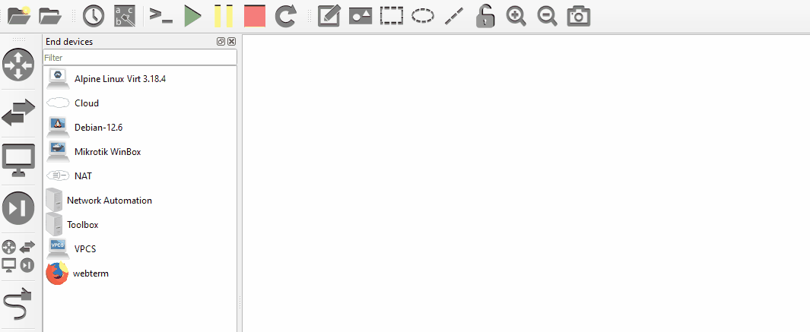
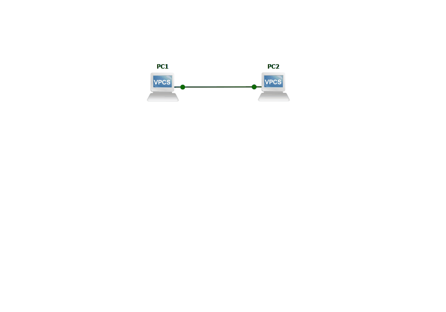

Первая схема в GNS3
🎯 Цель: научиться базовому взаимодействию со схемой и устройствами и выполнять базовую настройку устройств типа VPCS.
Что такое VPCS?
Это устройство в GNS3, которое имитирует компьютер. Совсем не требовательный к ресурсам сервера. Обладает лишь небольшим функционалом, достаточным для начала изучения компьютерных сетей:
- Задать IP-адрес (статически, динамически)
- Проверить доступность устройств
Создание схемы
Схема создается перетаскиванием иконок устройств на рабочее пространство.

Подключение к устройству

После первого подключения к устройству обычно появляется приветственная фраза и прочая информация.
Welcome to Virtual PC Simulator, version 0.8.3
Dedicated to Daling.
Build time: Sep 9 2023 11:15:00
Copyright (c) 2007-2015, Paul Meng (mirnshi@gmail.com)
All rights reserved.
VPCS is free software, distributed under the terms of the "BSD" licence.
Source code and license can be found at vpcs.sf.net.
For more information, please visit wiki.freecode.com.cn.
Press '?' to get help.
Executing the startup file
PC1>
Программа-терминал (консоль)
Для управления устройствами существуют различные программы, например:
- PuTTY. Пожалуй, одна из самых популярных программ. Не удобен тем, что не поддерживает вкладки, т.е. терминалы открываются в отдельных окнах, а это совсем не удобно даже при небольшом количестве устройств.
- Xshell. Поддерживает вкладки, но могут быть сложности со скачиванием.
- GNOME Terminal. Для Linux, поддерживает вкладки.
- Встроенная в ОС консоль и telnet-клиент. Для новичков это менее дружелюбный вариант.
- Прочие аналоги.
Доступные команды
В приветственной фразе нам подсказывают Press '?' to get help.
Если ввести в качестве команды символ ?, то на экране отобразится справка по доступным командам.
PC1> ?
? Print help
arp Shortcut for: show arp. Show arp table
clear ARG Clear IPv4/IPv6, arp/neighbor cache, command history
dhcp [OPTION] Shortcut for: ip dhcp. Get IPv4 address via DHCP
disconnect Exit the telnet session (daemon mode)
echo TEXT Display TEXT in output. See also set echo ?
help Print help
history Shortcut for: show history. List the command history
ip ARG ... [OPTION] Configure the current VPC's IP settings. See ip ?
load [FILENAME] Load the configuration/script from the file FILENAME
ping HOST [OPTION ...] Ping HOST with ICMP (default) or TCP/UDP. See ping ?
quit Quit program
relay ARG ... Configure packet relay between UDP ports. See relay ?
rlogin [ip] port Telnet to port on host at ip (relative to host PC)
save [FILENAME] Save the configuration to the file FILENAME
set ARG ... Set VPC name and other options. Try set ?
show [ARG ...] Print the information of VPCs (default). See show ?
sleep [seconds] [TEXT] Print TEXT and pause running script for seconds
trace HOST [OPTION ...] Print the path packets take to network HOST
version Shortcut for: show version
To get command syntax help, please enter '?' as an argument of the command.
PC1>
Не все из представленных команд используются часто
На обоих устройствах результат будет одинаковый. Выполнять данную команду не обязательно. Она нужна в случае, если вы не знаете синтаксис команды.
Не забывайте использовать ? или -h и Tab
- В каждой ОС должна быть справка по командам. В начале обучения команды будет запоминать сложно, но со временем они будут запоминаться.
?или-hиспользовать - зависит от устройства и его ОС. Возможен другой вариант. - С помощью
Tabможно дополнять вводимую команду, когда требуется полный ввод команды. Иногда команды можно не вводить полностью (например, в Cisco), что несколько ускоряет настройку, но при условии, что вы хорошо знаете синтаксис.
Например, команду show ip моржно написать как sh ip. В команде любые слова можно сокращать, если ее можно однозначно интерпретировать.
Связь между устройствами
Для связи между собой устройства используют MAC-адреса и IP-адреса:
- MAC-адреса обычно уже заданы на каждом устройстве производителем. Его можно поменять, но смысла в этом мало.
- IP-адреса обычно задаются вручную или автоматически со специального сервера. Т.к. на схеме такого сервера нет, то нужно задать их вручную.
Чтобы убедиться, что на устройствах нет IP-адреса, необходимо воспользоваться командой show. У большинства команд есть подкоманды. Чтобы посмотреть детальную справку по конкретной команде, необходимо также воспользоваться символом ?, введя его после интересующей команды, разделив пробелом.
PC1> show ?
show [ARG]
Show information for ARG
ARG:
arp Show arp table
dump Show dump flags
echo Show the status of the echo flag. See set echo ?
history List the command history
ip [all] Show IPv4 details
Shows VPC Name, IP address, mask, gateway, DNS, MAC,
lport, rhost:rport and MTU
ipv6 [all] Show IPv6 details
Shows VPC Name, IPv6 addresses/mask, gateway, MAC,
lport, rhost:rport and MTU
version Show the version information
Notes:
1. If no parameter is given, the key information of the current VPC will be
displayed
2. If 'all' parameter is given for ip/ipv6 a reduced view in tablular
format will be displayed.
PC1>
В справке указано, что можно посмотреть детальную информацию об IP.
Необязательные параметры
В справке некоторые команды окружены квадратными скобками [какая-то команда]. Эти скобки означают, что все, что внутри них, является не обязательным параметром (т.е можно указать, а можно не указывать), при этом результатирующий вывод может отличаться большей или меньшей информативностью.
В данном случае достаточно ввести команду show ip.
PC1> show ip
NAME : PC1[1]
IP/MASK : 0.0.0.0/0
GATEWAY : 0.0.0.0
DNS :
MAC : 00:50:79:66:68:00
LPORT : 20002
RHOST:PORT : 127.0.0.1:20003
MTU : 1500
PC1>
В результате выполнения команды видно, что MAC-адрес задан, а IP-адрес и маска сети отсутствуют. Нулевой IP-адрес считается некорректным для устройства, поэтому его нужно задать.
В справке есть команда ip, которая поможет задать IP-адрес на устройстве.
PC1> ip ?
ip ARG ... [OPTION]
Configure the current VPC's IP settings
ARG ...:
address [mask] [gateway]
address [gateway] [mask]
Set the VPC's ip, default gateway ip and network mask
Default IPv4 mask is /24, IPv6 is /64. Example:
ip 10.1.1.70/26 10.1.1.65 set the VPC's ip to 10.1.1.70,
the gateway to 10.1.1.65, the netmask to 255.255.255.192.
In tap mode, the ip of the tapx is the maximum host ID
of the subnet. In the example above the tapx ip would be
10.1.1.126
mask may be written as /26, 26 or 255.255.255.192
auto Attempt to obtain IPv6 address, mask and gateway using SLAAC
dhcp [OPTION] Attempt to obtain IPv4 address, mask, gateway, DNS via DHCP
-d Show DHCP packet decode
-r Renew DHCP lease
-x Release DHCP lease
dns ip Set DNS server ip, delete if ip is '0'
dns6 ipv6 Set DNS server ipv6, delete if ipv6 is '0'
domain NAME Set local domain name to NAME
PC1>
Ее синтаксис позволяет настроить IP-адрес несколькими способами.
Служебные адреса
Адреса можно задавать произвольные, но обычно исключением являются первый и последний адреса конкретной подсети, т.к. они являются служебными.
Так, например, в сети 10.0.0.0/24 обчыно нельзя использовать адреса 10.0.0.0 и 10.0.0.255.
На PC1 зададим второй по счету адрес, а на PC2 - предпоследний.
Настройка IP-адреса
Чтобы задать IP-адрес, воспользуемся строчкой address [mask] [gateway], которую необходимо написать после ключевого слова ip.
- address - IP-адрес, который необходимо задать
-
mask - маска сети (необязательный параметр, судя по синтаксису). В данном случае может быть указана как обычное число (длина маски) через символ
/, так и в формате IP-адреса. Первый вариант по мнению автора более удобный. Если не указать маску, то будет выбрана маска по умолчанию. Даже если она совпадает с той, что выбрана вами, лучше все равно явно указать. -
gateway - параметр, который мы не рассматривали, можно опустить.
graph LR
PC1 o--o Net{{10.0.0.0/24}} o--o PC2PC1> ip 10.0.0.1/24
Checking for duplicate address...
PC1 : 10.0.0.1 255.255.255.0
PC1>
PC2> ip 10.0.0.254/24
Checking for duplicate address...
PC2 : 10.0.0.254 255.255.255.0
PC2>
Теперь можно проверить, что адреса заданы успешно.
PC1> sh ip
NAME : PC1[1]
IP/MASK : 10.0.0.1/24
GATEWAY : 0.0.0.0
DNS :
MAC : 00:50:79:66:68:00
LPORT : 20002
RHOST:PORT : 127.0.0.1:20003
MTU : 1500
PC1>
PC2> sh ip
NAME : PC2[1]
IP/MASK : 10.0.0.254/24
GATEWAY : 0.0.0.0
DNS :
MAC : 00:50:79:66:68:01
LPORT : 20004
RHOST:PORT : 127.0.0.1:20005
MTU : 1500
PC2>
Проверка доступности устройств
После того, как адреса заданы, можно проверить доступность устройств. Для этого обычно используют команду ping. Выполнять ее можно на любом устройстве, где она присутствует. Синтаксис команды следующий
PC1> ping ?
ping HOST [OPTION ...]
Ping the network HOST. HOST can be an ip address or name
Options:
-1 ICMP mode, default
-2 UDP mode
-3 TCP mode
-c count Packet count, default 5
-D Set the Don't Fragment bit
-f FLAG Tcp header FLAG |C|E|U|A|P|R|S|F|
bits |7 6 5 4 3 2 1 0|
-i ms Wait ms milliseconds between sending each packet
-l size Data size
-P protocol Use IP protocol in ping packets
1 - ICMP (default), 17 - UDP, 6 - TCP
-p port Destination port
-s port Source port
-T ttl Set ttl, default 64
-t Send packets until interrupted by Ctrl+C
-w ms Wait ms milliseconds to receive the response
Notes: 1. Using names requires DNS to be set.
2. Use Ctrl+C to stop the command.
PC1>
Параметров относительно много.
Пока что интересует только параметр HOST - IP-адрес или доменное имя устройства. Доменные имена здесь не рассматриваются, поэтому будут указываваться IP-адреса. Указывать нужно IP-адрес того устройства, чью доступность с текущего устройства нужно проверить.
Команда ниже выполняется на устройстве PC1, поэтому указать необходимо IP-адрес PC2, т.е. будет проверена доступеность PC2 с PC1.
Ранее уже был задан на PC2 адрес - 10.0.0.254.
PC2 доступен с PC1
Если результат выше похож на этот (время отличаться может):
PC1> ping 10.0.0.254
84 bytes from 10.0.0.254 icmp_seq=1 ttl=64 time=0.327 ms
84 bytes from 10.0.0.254 icmp_seq=2 ttl=64 time=0.228 ms
84 bytes from 10.0.0.254 icmp_seq=3 ttl=64 time=0.222 ms
84 bytes from 10.0.0.254 icmp_seq=4 ttl=64 time=0.254 ms
84 bytes from 10.0.0.254 icmp_seq=5 ttl=64 time=0.402 ms
PC1>
то сделано все правильно. Подобный результат показывает, что устройство доступно. Часто можно услышать, что в таком случае говорят "устройство пингуется".
PC2 НЕ доступен с PC1
Если результат похож на этот:
PC1> ping 10.0.0.254
host (10.0.0.254) not reachable
PC1>
то, значит, где-то была ошибка, и стоит начать все с начала или попробовать найти ошибку. Если перезагрузить устройство (выбрав Reload в контекстном меню), то все несохраненные настройки будут сброшены.
Сохранение конфигурации
Как только была проверена работоспособность конфигурации, ее можно (а даже нужно) сохранить, чтобы после перезагрузки устройства, настройки не сбросились, и все команды не пришлось заново вводить.
На разных устройствах команда выглядит по-разному.
PC1> save
Saving startup configuration to startup.vpc
. done
PC1>
PC2> save
Saving startup configuration to startup.vpc
. done
PC2>
Чтобы убедиться, что все сохранилось, можно перезагрузить схему полностью, открыть консоль любого ПК, ввести команду ip и посмотреть, отображается ли ранее назначенный IP-адрес.
Просмотр сетевого трафика
Для этого можно использовать Wireshark.

Видеодемонстрация
🧠 Самостоятельная работа
Условия
- Сеть - 10.0.❔.0/25.
- Используйте эту же схему
- На PC1 должен быть назначен первый доступный адрес из сети
- На PC2 должен быть назначен последний доступный адрес из сети
Не забывайте про существование специальных (зарезервированных) адресов.
Используя данный сайт и его ресурсы, вы соглашаетесь с политикой и соглашениями сайта.
©️ Оформление, изложение, медиаматериалы. И. Попов, 2020-2025
Сделано с помощью Material for MkDocs.